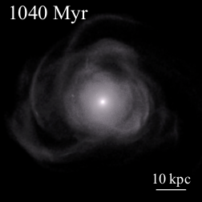

Research Projects
Master Project (2022)
Title: Colliding Galaxies in a (Nut)Shell
Supervisor: Florent Renaud
Project Description: I run numerical simulations of two merging galaxies and their formation into a shell galaxy using the RAMSES code (Teyssier, 2002). Via a parameter survey, I explore different sets of parameters to find an orbtial configuration favourable for shell formation. From that, I perform an idealised high-resolution merger simulation and its formation into a shell galaxy, and analyse how the merger-driven star formation activity evolves with time, within the system, what the physical conditions are for it, and how it relates to its shell structure.
Thesis: LUP Student Papers

Summer Research Project (2021)
Supervisor: Paul McMillan
Project Description: In Gaia Early Data Release 3, a break in the vertical angular momentum-velocity plane can be disguished (Gaia Collaboration et al., 2021), a break that is suspected to have a dynamical origin. In this project, I explore the possibility for a dynamical origin by running N-body simulations (> 3 million particles) of a Milky Way-like galaxy and the effects of a Sagittarius dwarf impact, using the RAMSES code (Teyssier, 2002).
Publication (co-author): ArXiv


Bachelor Project (2020)
Title: Capture of interstellar objects in the Solar system
Supervisor: Daohai Li
Thesis: LUP Student Papers
Copyright © Jonathan Petersson 2022Last updated: 2022-07-05